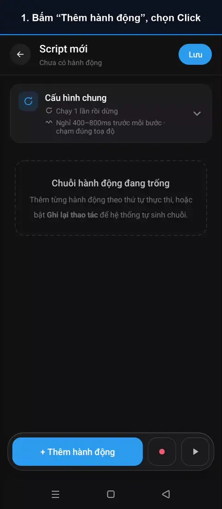

Hướng dẫn sử dụng
Mỗi hành động có một đoạn video quay trên điện thoại thật. Chỗ được chạm sẽ sáng lên để bạn dễ theo dõi.
- Bạn chạm
- AutoGest tự chạm khi chạy tập lệnh
Chạm và cử chỉ
ClickChạm 1 lần tại toạ độ
▶ Xem video
Click liên tụcChạm thật nhanh nhiều lần tại một toạ độ
Sắp có
Long clickGiữ tại toạ độ
Sắp có
VuốtKéo từ điểm A đến điểm B
Sắp có
CuộnCuộn theo hướng, không cần toạ độ
Sắp có
Dán văn bảnDán cả đoạn chữ vào ô nhập
Sắp có
Gõ ký tự PROChạm từng phím như người gõ
Sắp có
Chờ và nhận diện
ChờTạm dừng trước khi sang bước kế
Sắp có
Chờ ảnh PROChờ ảnh hiện ra hoặc biến mất, không chạm
Sắp có
Chờ màu PROChờ một điểm đổi sang màu đã chọn
Sắp có
Click ảnh PROTìm ảnh mẫu trên màn hình rồi chạm
Sắp có
Click chữTìm chữ rồi chạm · không dùng cho game
Sắp có
Click Node PROChụp màn hình, chọn node rồi chạm · không dùng cho game
Sắp có
Chờ và nhận diện thông báo PROChờ thông báo có chữ bạn chọn hoặc tin biến động số dư, rồi đọc to hay chạy tiếp
Sắp có
Hệ thống
Mở ứng dụngMở ứng dụng rồi chờ nó hiện lên
Sắp có
Quay lạiNhấn phím Quay lại của hệ thống
Sắp có
Màn hình chínhVề màn hình chính của máy
Sắp có
Ứng dụng gần đâyMở danh sách ứng dụng gần đây
Sắp có
Luồng tập lệnh
Nếu… thì PROKiểm tra màn hình rồi rẽ sang một trong hai nhánh
Sắp có
Lặp tới khi PROChạy lại các bước bên trong tới khi điều kiện đúng
Sắp có
Gọi tập lệnh PROChạy lại một tập lệnh khác rồi quay về
Sắp có
Click — chạm 1 lần tại một toạ độ
Hành động cơ bản nhất: AutoGest chạm đúng một điểm bạn đã chọn trên màn hình. Ví dụ dưới đây dạy AutoGest bấm phím 7 trong ứng dụng Máy tính.

- Ở tab Tập lệnh, bấm nút + để tạo tập lệnh mới.
- Bấm Thêm hành động rồi chọn Click.
- Trên thẻ Click, bấm Thêm tọa độ. Tâm ngắm và bảng điều khiển hiện lên nổi trên màn hình.
- Mở ứng dụng bạn muốn AutoGest bấm vào — tâm ngắm vẫn nổi ở trên.
- Kéo tâm ngắm tới đúng điểm cần chạm. Dùng các mũi tên để dời từng chút, hoặc nút bông tuyết để giữ yên màn hình rồi phóng to.
- Bấm OK. Quay lại AutoGest, thẻ Click đã có toạ độ.
- Bấm ▶ Chạy thử rồi chuyển sang ứng dụng đích. Sau 3 giây đếm ngược, AutoGest tự chạm vào điểm bạn đã chọn.
- Bấm Lưu để giữ tập lệnh.
Mẹo
- Toạ độ được quy đổi theo kích thước màn hình, nên tập lệnh vẫn chạm đúng chỗ khi mở trên máy có màn hình khác.
- Ở thẻ Cấu hình chung, bạn đặt khoảng nghỉ giữa các bước và độ lệch chạm để thao tác tự nhiên như người thật.
- Nút đổi chỗ theo từng lần mở? Dùng Click ảnh hoặc Click chữ để AutoGest tự tìm nút trước khi chạm.